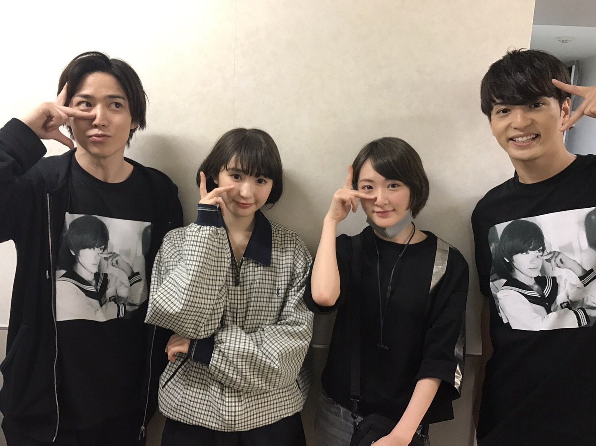

さゆりすとが出演している
舞台
若様組まいる〜 アイスクリン強し
を観劇してきました(*´꒳`*)

モマで共演しました
鎌苅健太さん
中村優一さん
とさゆりすと
少年社中のふみこさんが生駒卒コンTシャツをモマメンバーに配ってるんだって！！
本当にありがとうございます！！☆☆
（いいもん作ったかもしれない笑笑）
嬉しいし
だけど、今日お二人とも着てるし
なんだか、照れたけど嬉しかった(*´꒳`*)
またお二人と共演出来るように明後日から頑張らなきゃと思いました。
さゆりすと頑張ってね(*´꒳`*)☆
会えて良かった〜！！！
あやねちゃんのはまた後で行くよう
メンバーが出ている舞台沢山あるから観劇沢山出来るの超嬉しい(*´꒳`*)
明日で乃木坂最後だと言うのに、
私は至っていつも通りです
時間があるから、
浴室のカビ防止の散布して、
掃除機かけて
断捨離して
お散歩がてら服買って
自炊のレパートリー増やしてみてます！
楽しいよ〜笑
明日、乃木坂楽しみます！！
へばなっ★彡